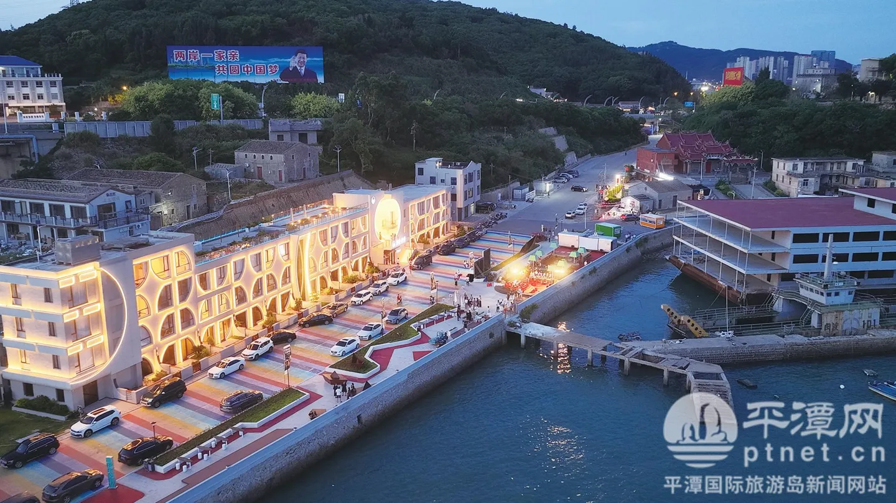

中文原文
2025-05-11 09:37:37 来源：东南网 责任编辑：陈玮
近日，记者驱车驶入平潭综合实验区金井片区娘宫村，只见碧海、白墙与错落有致的绿植勾勒出独特的滨海景致。
“我们村‘五一’假期单日游客接待量近500人次，140余间民宿客房全部满员，大伙儿忙得脚不沾地。”娘宫村党支部书记周建鸿难掩喜悦地说。
谁能想到，这个如今热闹非凡的滨海村落，曾因平潭海峡大桥通车而沉寂许久。
基础设施焕新貌
曾经，枕山襟海的娘宫村凭借娘宫码头，成为平潭岛连通外界的交通枢纽。航运鼎盛时，码头自晨光熹微便迎来第一批旅客，暮色四合仍有归舟靠岸，成百上千的人流在此汇聚。熙来攘往间，不仅为村民带来丰厚的经济收入，更在岁月的沉淀中孕育出独一无二的渡口文化。
彼时的娘宫村，充满活力与烟火气。
然而，时代的车轮滚滚向前。2010年，平潭海峡大桥建成通车，承载无数人记忆的轮渡码头就此完成使命，娘宫村也在时代的浪潮中逐渐沉寂。
“以前在渡轮上当水手，每月有2000元的收入，日子过得很踏实。大桥通车后，渡轮停运，我就没了工作。”娘宫村村民俞昌雄说。
外部交通优势丧失的同时，娘宫村内基础设施的滞后更成了发展绊脚石。
“那时，村内通往外界仅有一条黄土路，晴天尘土飞扬，雨天泥泞难行。而且，生活污水排放、高陡边坡隐患、村道夜间照明等问题不仅长期困扰村民，也阻碍村子发展。”周建鸿的描述，道出了娘宫村当时的困境。
2022年，在平潭当地政府的支持下，娘宫村迎来发展的转折点。村里大力推进基础设施建设，古村落得到修缮保护，污水管网全面铺设，村口通道拓宽硬化，1000平方米地质灾害点完成整治。
“此外，我们还在村里种植1060株夹竹桃，播撒4000平方米草籽改善环境。一系列的改造，既保留了村子历史风貌，又实实在在改善了人居环境，解决了民生难题。”周建鸿介绍。
如今，娘宫村曾经狭窄泥泞的黄土路，已蜕变为宽敞平坦的大道，夜幕降临时，路灯与海面波光交相辉映，勾勒出一幅静谧美好的渔村夜景。
“现在村里条件越来越好，路好走了，晚上出门亮堂，生活比以前舒心多了！”俞昌雄说。
文旅引擎驱动发展
基础设施的全面升级，为娘宫村打开了发展新局面。2024年，娘宫村依托渡口文化、码头旧址、古村落、妈祖文化和山海资源，启动“渡口记忆·娘宫小镇”项目，创新采用“国有企业+社会资本+村集体”三方合作模式，将渡口文化保护与乡村建设结合，对村庄进行整体开发。
“在多方合力下，福建瑞佰丰文旅集团、平潭瑞丰游艇俱乐部等4家企业累计注入1.8亿元资金，在娘宫村打造‘月畔·栖霞’‘山寻·无尽海’等高端民宿项目。”周建鸿介绍，其中，由岚商翁祖斌与村集体合作开发的“月畔·栖霞”海景民宿，投资5000万元建成100余间客房，自2024年8月开业以来，即便在淡季的周末，入住率也能稳定在70%左右。
随着文旅产业的蓬勃发展，大量就业岗位随之诞生，越来越多的娘宫村村民实现了“家门口就业”。
“村里酒店民宿开起来后，我在家门口找了份酒店民宿安保主管的工作，每个月都有稳定收入。”娘宫村村民俞兆祥说。
如今的娘宫村，除了1万平方米的海景民宿客房常常供不应求外，新推出的游艇出海项目也成为新亮点。
“今年‘五一’假期，游艇项目正式运营，很受游客欢迎，每天发船六七趟，5天累计接待游客350余人次。”周建鸿介绍。
从沉寂渡口到旅游热土，站在新的起点上，娘宫村的发展蓝图愈发清晰。
“目前，村里正在进行绿化景观改造工程的收尾工作。”周建鸿表示，“下一步，我们将加大招商力度，融合文化体验、观光游览与特色餐饮，推进海上餐厅、漂浮酒店等项目落地，全力打造集文化、旅游、研学于一体的滨海小镇。”
English translation
May 11, 2025 09:37:37 Source: Fjsen.com Editor: Chen Wei
Recently, the reporter drove into Niangong Village, Jinjing Area of Pingtan Comprehensive Experimental Zone, and saw the unique coastal scenery outlined by the blue sea, white walls and scattered green plants.
“During the May Day holiday, our village received nearly 500 visitors a day, and all 140 homestay rooms were fully booked. We were all extremely busy,” said Zhou Jianhong, Secretary of the Village Party Branch, with obvious delight.
Few would have imagined that this bustling coastal village was once left in quiet decline after the opening of the Pingtan Strait Bridge.
Infrastructure Gets a Full Upgrade
Once upon a time, Niangong Village, nestled between mountains and the sea, relied on Niangong Wharf to become a transportation hub connecting Pingtan Island with the outside world. At the peak of shipping, the wharf welcomed the first batch of passengers at dawn and still had returning ships berthing at dusk, with hundreds of people gathering here. The bustling crowds not only brought substantial economic income to the villagers, but nurtured a unique ferry terminal culture over the years.
At that time, Niangong Village was full of vitality and daily life charm.
As time moved on, however, things changed.
In 2010, the Pingtan Strait Bridge opened to traffic. The ferry terminal, which held so many memories, finished its historic role, and Niangong Village gradually faded into quietness.
“I used to work as a sailor on the ferry, earning 2,000 yuan a month with a stable life. When the bridge opened and ferries stopped, I lost my job,” said Yu Changxiong, a local villager.
Losing its transport advantage was only part of the trouble; outdated local infrastructure became a major barrier to development.
“Back then, there was only one dirt road connecting the village to the outside. It was dusty on sunny days and muddy and hard to walk on when it rained. Problems like untreated domestic sewage, hazards from steep slopes, and a lack of streetlights at night troubled villagers for years and held back the village’s growth,” Zhou recalled.
In 2022, with the support of the local government of Pingtan, Niangong Village ushered in a turning point in its development. The village vigorously promoted infrastructure construction: the ancient village was renovated and protected, the sewage pipe network was fully laid, the entrance passage was widened and hardened, and 1,000 square meters of geological disaster points were renovated.
“We also planted 1,060 oleander shrubs and sowed grass seeds over 4,000 square meters to improve the environment. These changes preserved the village’s historic look while greatly improving living conditions and solving real livelihood problems,” Zhou explained.
Today, the narrow, muddy dirt roads have been replaced by wide, smooth avenues.
When night falls, streetlights glow alongside the sparkling sea, creating a peaceful and charming fishing village night view.
“Conditions in the village are so much better now. The roads are easy to walk on, and it’s bright at night. Life is far more comfortable,” Yu said.
Tourism Becomes the New Growth Engine
The complete upgrade of infrastructure opened a new chapter for Niangong Village.
In 2024, building on its ferry culture, old wharf site, ancient dwellings, Mazu culture, and coastal scenery, the village launched the “Ferry Memory · Niangong Town” project. It innovatively adopted a tripartite cooperation model of “state-owned enterprise + social capital + village collective”, combining ferry culture protection with rural construction to carry out the overall development of the village.
“With the joint efforts of multiple parties, four enterprises including Fujian Ruibaifeng Culture and Tourism Group and Pingtan Ruifeng Yacht Club have invested a total of 180 million yuan to build high-end homestay projects such as 'Yuepan·Qixia' and 'Shanxun·Endless Sea' in Niangong Village,” Zhou Jianhong introduced. Among them, the “Yuepan·Qixia” sea-view homestay, co-developed by Weng Zubin, a businessman from Pingtan and the village collective, invested 50 million yuan to build more than 100 rooms. Since its opening in August 2024, even on weekends in the off-season, the occupancy rate has been stably around 70%.
The booming tourism industry has created plenty of jobs, allowing more villagers to work close to home.
“After the hotels and homestays opened, I became a security supervisor at one of them near my home, with a steady monthly income,” said Yu Zhaoxiang, another villager.
Today, the 10,000-square-meter sea-view homestay rooms are often in high demand, and the newly launched yacht cruising trips have become a big hit.
“During this year’s May Day holiday, the yacht service officially started and proved very popular. We ran six to seven trips a day, receiving more than 350 visitors over five days,” Zhou said.
From a forgotten ferry terminal to a popular tourist destination, Niangong Village now has a clear development blueprint.
“We’re finishing the final touches on greening and landscape improvements,” Zhou said.
“Next, we will step up investment promotion, integrate cultural experiences, sightseeing and specialty dining, and launch projects such as overwater restaurants and floating hotels. Our goal is to build a coastal town that combines culture, tourism and study tours.”